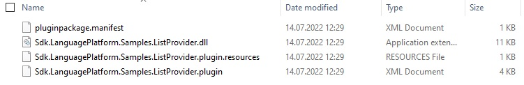

Building the Plug-in
At this point, it is already possible to build the project - although, of course, it will not provide any functionality. This chapter contains information on how the build and deployment process of the plug-in works and which requirements need to be fulfilled, so that your plug-in is going to be recognized by Trados Studio.
Building the project will generate a .sdlplugin file, in our example Sdl.Sdk.LanguagePlatform.Samples.ListProvider.csproj.sdlplugin, which will be placed inside your build output path. The .sdlplugin file is technically speaking a ZIP archive that contains the required plug-in components such as the plug-in binary (.dll itself), the resources file, the manifest etc. For our example, the **.sdlplugin file will contain the following:
- The plug-in assembly, e.g. Sdl.Sdk.LanguagePlatform.Samples.ListProvider.dll
- The plug-in manifest, e.g. Sdl.Sdk.LanguagePlatform.Samples.ListProvider.plugin.xml. The manifest lists information on any extension classes that the plug-in contains. It is this manifest, which will be created during the build process, that declares the assembly and the corresponding extension classes to Trados Studio. By deleting this manifest *.xml file you would actually deactivate the plug-in and 'hide' it from the application.
- The plug-in resources file, e.g. Sdl.Sdk.LanguagePlatform.Samples.ListProvider.plugin.resources. This resources file contains all the localizable strings and images referred to within the plug-in manifest, and is compiled from PluginResources.resx (see also The Resources File).

In order for Trados Studio to pick up the plug-in package and to extract it, the following folders need to be available on your hard drive:
**For Windows 10 / Windows 8.1 **:
%AppData%\Roaming\SDL\SDL Trados Studio\16\Plugins\Packages\
and
%AppData%\Roaming\SDL\SDL Trados Studio\16\Plugins\Unpacked\
Make sure that you place the *.sdlplugin file into the sub-folder Packages and launch Trados Studio. During startup of Trados Studio the content of the package will be automatically extracted to the Unpacked sub-folder, as illustrated below:

Upon start-up Trados Studio will load the unpacked plug-in and show the following message, which you can confirm with Yes, so that the plug-in gets loaded. This message appears when loading plug-ins that have not been certified by RWS, which could potentially be unsafe. The message can be avoided by submitting your plug-in to RWS for certification.

After loading the plug-in in Trados Studio, you can see the the plug-in by raising the corresponding dialog box through the menu command Tools -> Plug-ins. The Plug-ins dialog box should list the name of your newly created plug-in:

Also, when you open a document for translation, your plug-in should now be listed under the available translation providers:

Note
If a user clicks No when the plug-in security message is displayed during start-up of Trados Studio, the plug-in will not be shown in the application.
Please see also Setting up a Development Machine.